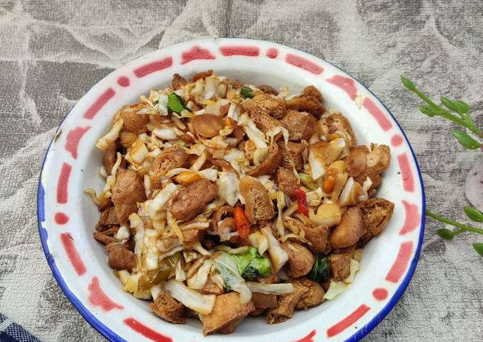

Tumis Tahu Kubis
Bahan-bahan
- Tahu
- Kubis
- 4 siung bawang merah
- 2 siung bawang putih
- 3 cabe rawit
- 2 cabe ijo
- 1 cabe besar
- 1 helai bawang pre
- Lengkuas geprek
- 1 sdt garam
- 1/2 sdt micin
- 1/4 sdt gula
- 1/4 sdt Royco
Cara Membuat
- Goreng tahu sampai coklat.
- Potong kubis dan iris semua bahan iris.
- Tumis bahan iris sampai matang dan harum.
-
Tambahkan kecap asin, kecap manis, garam, Royco, micin, dan gula.
Masukkan tahu dan kubis.
- Tambahkan sedikit air. Cek rasa. Tunggu sampai matang.
Selamat mencoba!